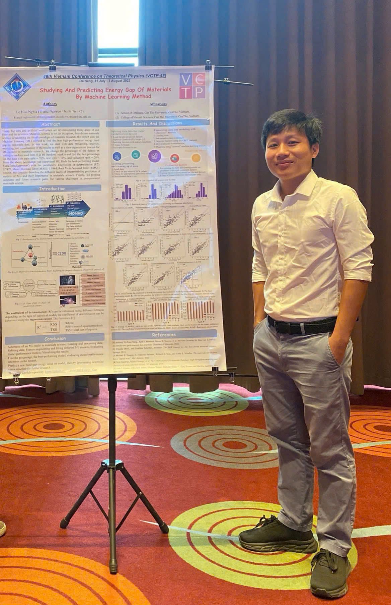

Vo Khuong Dien Research Group
Theoretical & Computational Research on Condensed Matter Physics and Nanoscience
Our group investigates the quantum behaviour of electrons, excitons, and phonons in low-dimensional materials using advanced theory and high-performance computing. We combine first-principles methods (DFT, GW, BSE), Wannier modelling, and data-driven techniques to uncover key mechanisms behind light–matter interactions, exciton dynamics, electron–phonon scattering, and thermoelectric transport.
We increasingly integrate machine-learning-accelerated simulations for fast material screening, large-scale molecular dynamics, and automated quantum-mechanical workflows. The group develops open-source tools, contributes to education, and collaborates widely across national and international institutions.
Our vision is to build a unified platform for simulating and engineering quantum materials for next-generation optoelectronics, energy technologies, nanoscale devices, and valley-based information systems.
News & Highlights
We maintain an active portfolio of collaborative research, student projects, and international activities. Below are some of our recent milestones.
News
Below is a sample format. You can keep adding items here manually.
- 2025 · [Update here: e.g., “Dr. Vo invited talk at …”]
- 2024 · [Update here: student awards, new papers, workshops]
- 2023 · [Update here: collaborations, invited seminars, etc.]
People
Dr. Vo Khuong Dien
Leader
Education
- Dr. in Physics, National Cheng Kung University, Tainan, Taiwan (2022)
- B.Sc. in Engineering Physics, Can Tho University, Viet Nam (2018)
Employment Experiences
- Lecturer, Can Tho University, Can Tho, Viet Nam (12/2025–Now)
- Researcher–Lecturer, FPT University, Can Tho, Viet Nam (06/2025–12/2025)
- Postdoctoral Researcher, National Yang Ming Chiao Tung University, Hsinchu, Taiwan (2023–2025)
Contact Information
- dienvk[at]example.edu (replace with real)
- Affiliation
- Department of Physics / Engineering, Vietnam
- Office
- [Room, Building, Campus]
Students & Collaborators
Openings
We welcome motivated students and collaborators who are interested in quantum materials, exciton physics, and computational methods.
- B.Sc. / M.Sc. projects on exciton and thermoelectric properties in 2D materials.
- Collaborations on Wannier-based GW–BSE, electron–phonon coupling, and valleytronics.
Research
Exciton Physics in 2D Materials
This work investigates how crystal-symmetry breaking in monolayer SnS and SnSe enables robust valley-selective optical transitions. Using first-principles GW-BSE calculations, the study reveals that different polarization states of light couple selectively to distinct electronic valleys, providing a controllable valley degree of freedom. The results identify tin chalcogenide monolayers as promising candidates for next-generation valleytronic devices where information can be encoded and manipulated through valley polarization.
- Nguyen Thanh Tien, Pham Thi Bich Thao, Nguyen Thi Han, Vo Khuong Dien. “Symmetry-driven valleytronics in single-layer tin chalcogenides SnS and SnSe.” PRB 109, 155416 (2024). DOI: 10.1103/PhysRevB.109.155416

Machine-Learning-Accelerated Thermoelectric Design
This research line uses first-principles calculations combined with machine-learning interatomic potentials to explore the thermoelectric potential of low-dimensional materials. In monolayer penta-InP5, we demonstrate that ultralow lattice thermal conductivity and favorable electronic transport properties yield a high thermoelectric figure of merit (ZT) at room temperature, making it promising for flexible and wearable applications.
We further explore how electron–phonon coupling, phonon anharmonicity, and structural tuning can be used to engineer κL and ZT in 2D systems more broadly.
- Nguyen Thanh Tien, Pham Thi Bich Thao, Duy Khanh Nguyen, Nhat Le Thanh, Vo Khuong Dien. “Thermoelectric properties of penta-InP5: A first-principles and machine learning study.” Journal of Applied Physics 137, 8 (2025). DOI: 10.1063/5.0251741
Selected Publications
- Nguyen Thanh Tien, Pham Thi Bich Thao, Duy Khanh Nguyen, Nhat Le Thanh, Vo Khuong Dien. “Thermoelectric properties of penta-InP5: A first-principles and machine learning study.” Journal of Applied Physics 137, 8 (2025). DOI: 10.1063/5.0251741
- Nguyen Thanh Tien, Pham Thi Bich Thao, Nguyen Thi Han, Vo Khuong Dien. “Symmetry-driven valleytronics in single-layer tin chalcogenides SnS and SnSe.” PRB 109, 155416 (2024). DOI: 10.1103/PhysRevB.109.155416
- Vo Khuong Dien, Pham Thi Bich Thao, Nguyen Thi Han, Nguyen Duy Khanh, Le Vo Phuong Thuan, Ming-Fa Lin, Nguyen Thanh Tien. “Strain-controlled electronic transport and exciton radiative lifetime in monolayer GeS.” PRB 108, 205406 (2023). DOI: 10.1103/PhysRevB.108.205406
- Vo Khuong Dien, Nguyen Thanh Tien, Nguyen Duy Khanh, Nguyen Thi Ngoc Han, Ming-Fa Lin. “From hexagonal to rocksalt structure: A computational study of gallium selenide under hydrostatic pressure.” PRB 108, 205150 (2023). DOI: 10.1103/PhysRevB.108.205150
- Vo Khuong Dien, Nguyen Thi Han, Wei Bang-Li, Kuang-I Lin, Ming-Fa Lin. “Correlation between orbital hybridizations, phonon spectra, and thermal properties of graphene, germanene, and plumbene.” pss (RRL) 17(5), 2200469 (2023). DOI: 10.1002/pssr.202200469
Full publication list: Google Scholar / ORCID
Teaching
The research group is actively involved in teaching and curriculum development in physics, and computational technique, with a strong emphasis on computational thinking and hands-on simulation.
Quantum Simulation & Computational Materials Design
Hands-on introduction to the WannierBSE code, including scripting in Matlab and practical workflows on HPC systems.
Special Topics: Excitons in Low-Dimensional Systems
Advanced topics in many-body perturbation theory and exciton physics, aimed at graduate students and motivated undergraduates who are interested in quantum materials research.
Codes & Tools
This section lists public codes, tutorials, and repositories that support research and teaching in computational quantum materials.
Berry Curvature & Spin Texture Toolkit
Python scripts to plot Berry curvature, spin textures, and valley-resolved band structures from Wannier-based tight-binding models, useful for valleytronics and topological materials.
[Add link to GitHub or local page here]
Thermoelectric Transport Post-Processing
Scripts to read Sigma/Seebeck/Conductivity data, compute ZT, and generate publication-quality plots for 2D thermoelectric materials, including penta-InP5.
[Add link to GitHub or local page here]
Gallery / Album
You can place group photos, workshop activities, conference pictures, etc. For now, here is a simple placeholder grid.
Contact
Address
[Department / Faculty]
[University Name]
[Street, District]
[City], Vietnam
dienvk[at]example.edu (replace with actual address)
For students
If you are interested in joining the lab, please send:
- Short CV
- Transcript (if available)
- A brief statement of your research interests
Email subject: “Application – Vo Khuong Dien Research Group – [Your Name]”